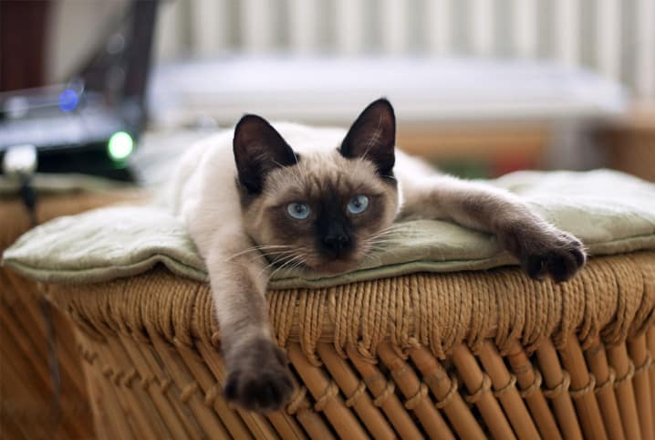

O gato-domestico é um dos felinos mais comuns, sendo extremamente recorrente como um animal domestico. Há cerca de 250 especies desse felino. Eles possuem um relação com os humanos de longa data. Alega-se que os antigos egípcios podem ter sido os responsáveis por domesticar os primeiros gatos, há 4 mil anos atrás. Os gatos-domesticos são carnívoros, mas tambem alimentam-se de vegetais e frutas.
| Nomenclatura | Tempo de vida | Alimentação | Imagem |
|---|---|---|---|
| Felis silvetris catus | 15 Anos | Aves, roedores, repteis |  |